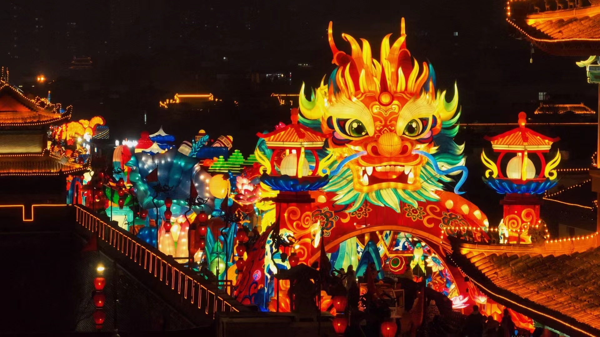
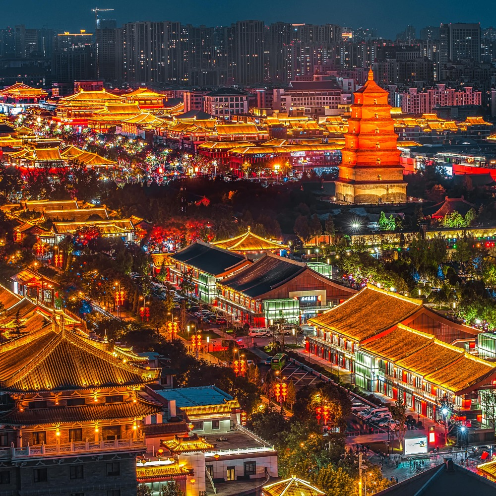
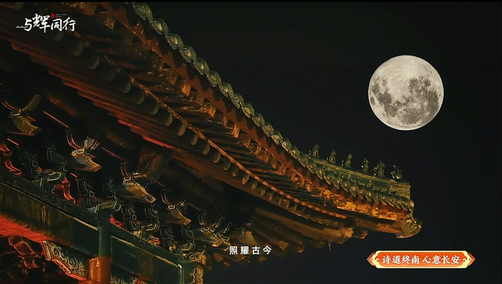

🎊 Seasons of Celebration
Spring Festival

The City Wall transforms into a sea of illuminated silk lanterns — dragons, phoenixes, and zodiac animals light up the ancient ramparts. The largest lantern festival in Northwest China.
Tang Dynasty Nights

Every evening, the Grand Tang Dynasty Ever-Bright City comes alive with street performers in Tang costumes, poetry recitals, and the famous "Tumbler Lady" balancing act. It's a living time machine.
Mid-Autumn Festival

Locals gather at the Big Wild Goose Pagoda square to admire the full moon, recite Tang poetry, and share mooncakes. The fountain show is synchronized with classical music for the occasion.
Qingming Festival
Kite flying on the City Wall. Locals write wishes on kites before releasing them — a tradition dating back 2,000 years.
Peony Festival
Xingqing Palace Park blooms with thousands of peonies — the flower that symbolized Tang Dynasty imperial power.
Dragon Boat Festival
Zongzi (sticky rice dumplings) with Shaanxi flair — stuffed with red dates and honey. Dragon boat races on the Wei River.
Datang Everbright Summer
Extended nighttime performances and water mist cooling systems make the Tang Paradise a summer evening haven.
Silk Road Arts Festival
International performances celebrating Xi'an's role as the Silk Road starting point. Dance, music, and theater from across Eurasia.
Double Ninth Festival
Hike Mount Li for panoramic autumn views. Chrysanthemum wine tasting at Huaqing Palace.
Laba Festival
Free Laba porridge distributed at temples across the city — a warming tradition that marks the countdown to Spring Festival.
Ice Lantern Show
Tang Paradise hosts an ice sculpture exhibition with illuminated frozen pagodas and mythical creatures.